Built with Mobirise
Free Offline Site BuilderAuthor – Sampada Pandit
Version - Case Study - Road Accident (Victoria) V1.0
Stakeholders - Sampada
Date – 18-Apr-2022
Table of Contents
1. Introduction
2. Methodology
2.1 Data and Source
2.2 Data analytics Framework
2.2.1 Descriptive Analytics
3. Results and Discussions
3.1 Figure 2 Accident Statistics
3.2 Figure 3 Accidents & Fatalities by Road Type
Figure 4 Accidents & Fatalities by Road Geometry
3.3 Figure 5 Accidents & Fatalities by Speed Zone
3.4 Figure 6 Accidental & Fatalities factors
3.5 Figure 7 Fatalities by Time of Day
Figure 8 Accidents by Lightening Conditions
3.6 Accidents by Regions
Figure 9 Accidents by Region
3.7 Figure 10 Road Accidents Statistics Dashboard
3.8 Figure 11 Road Fatalities Statistics Dashboard
4. Inference
5. Policies to reduce Road Accident and Fatalities Rates
1. Introduction
Road accident is quite a serious matter as it could result in fatalities, injuries and trauma. More than one million individuals have died in road crashes around the world. Road accidents are one of the major causes of death. Pedestrians, Motorcyclists and Cyclists are particularly susceptible and present in most of fatalities. With the increase in number of registered vehicles and drivers it’s very important to track the Accidents rate so we can understand the trends in injuries and fatalities rate.
Victoria is the second largest state in Australia by population. It recorded 12697 and 12787 accidents in 2011 and 2012 respectively; and 283 road fatalities in 2011 and 280 fatalities in 2012. This study aims to explore road accidents data in order to reveal potential new pattern to increase understanding and add new knowledge about accidents scenario particularly in Victoria using data analytics and visualization.
2. Methodology
2.1 Data and Sources
The data used in this study is obtained from the Victorian Association of Local Government (VALG) in excel format. This study utilizes road accident data for 2011 and 2012.
2.2 Data analytics Framework
Figure 1 below represents the general data analytical framework that is being used on the data, starting from Understanding the requirements, followed by Identifying the problem, Collecting the Data, Understanding, preparing it for analysis, it, Analyzing it, creating visuals and dashboards and then gaining insights.
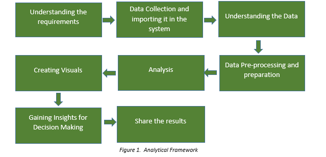
Data Pre-processing is the most crucial stage where Data Quality is assessed. Data cleaning is performed where null values are checked and substituted with appropriate values based on the overall row data of that particular column.
In case of numerical columns mean/average could be substituted if no proper value is communicated.
Power Query is quite a powerful tool where we shape our data by adding columns, merging, removing, pivoting/unpivoting, changing data types.
Data Transformation is done so that we have the process format of data for analysis.
Feature selection is also done in Data Transformation part where we decide which features are used in supervised and which features can be taken for unsupervised Machine Learning.
This study employs Descriptive Analytics. The objectives in this case study are achieved by employing data analytics methodology focusing on data visualization tool using Power BI and Power Query Editor.
2.2.1 Descriptive Analytics- Descriptive analytics aims to describe trends and relationships of road accidents using historical data. There are different ways to describe and gain descriptive insights. It summarizes raw data. This study employs several proposed type of visualization charts with the following corresponding purposes:
Card - to get the total number of accident counts and counts of vehicles involved in both the years.
Line Chart - to understand the pattern of accidents. Injuries and fatalities for 2011 and 2012. So, as to understand the injuries and fatality rates and determine whether the rate is increasing or decreasing.
Matrix – to understand what factors (Animals, Pedestrians, and Vehicles) lead to most number of accidents and is the rate increased/decreased by the end of 2012.
Clustered Bar Charts – to understand what Road Types and Road Geometries led to maximum number of accidents.
Tornado Custom Chart – to understand accident rates over speed zone and comparing the data for both the years.
Multi-Level Row Chart – to understand at what time of the day and in what lightening conditions most accidents take place and comparing the data for 2 years.
Custom Tree Map – to analyze count of accidents at each region level supported by leaf navigation.
Others – various other formatting options like shapes, text boxes, grouping, listing have been used.
Note – The dashboards could be made more interactive by adding slicers for year, if more than 2 years data is available.
3. Results and Discussions
3.1 Accident Statistics
Fig. 2 shows the overall trends in the number of traffic accidents, number of injuries, and number of fatalities for 2011 and 2012 respectively according to the Victorian Association of Local Government (VALG). We can see the decrease in the number of accidents by the end of 2012, also less number of people injured. That resulted in comparatively less fatalities.
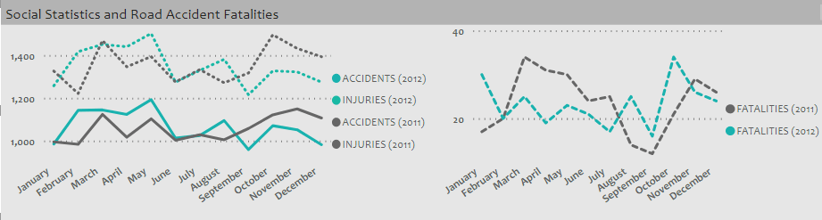
figure 2
3.2 Various factors such as Road Type and Road Geometry plays a major role in Road Accidents. From figures 3 & 4 we can clearly see that maximum number of road accidents took place on road and street. Maximum accidents occur where intersections were not present. The number of accidents dropped a bit at T intersection and cross intersection. This also implies Number of fatalities occurred is directly proportional to the Road Type and Road Geometry. More fatalities occurred on straight roads.
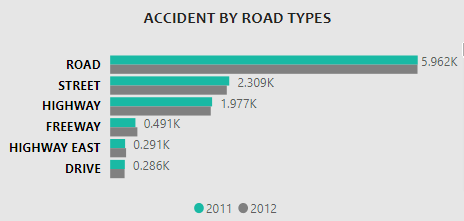
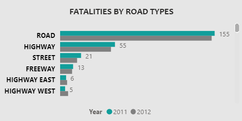
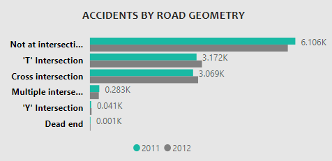
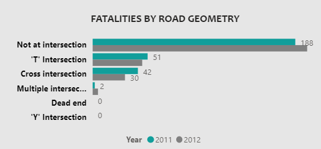
3.3 Speeding is one of the factors for road accidents. Figure 5 shows that at speed limit 60 maximum number of accidents occurred. Speed limits are set based on various conditions like School zones, safety issues, public/political pressure.
However, most number of fatalities occurred at speed limit of 100.
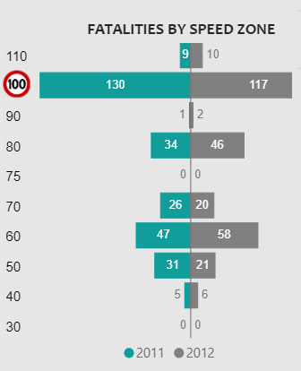
Figure 5 Accidents & Fatalities by Speed Zone
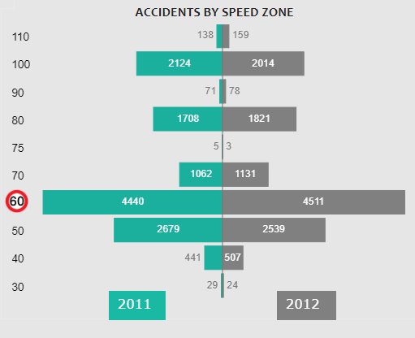
Figure 5 Accidents & Fatalities by Speed Zone
3.4 Figure 6 represents the overall factors that leads to road accidents. Mostly on highways we can see wild animals jumping from nowhere in front of our vehicles. However the fatalities decreased to 0% in 2012 as compared to 2011. We can see around 89% of road accidents involved vehicles and 9-10% of pedestrians for both the years 2011 and 2012.
Fatality rate with only vehicles involved is tremendously high. Also it got increased in 2012 as compared to 2011.
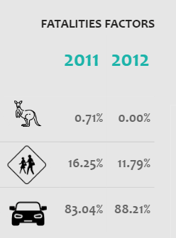
Figure 6 Accidental & Fatalities factors
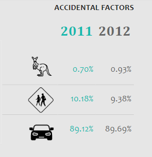
Figure 6 Accidental & Fatalities factors
3.5 Light plays a major part in road accidents. From figure 7 & 8 we can see most of the road accidents occur during the day time. It’s the time when the Sun is very bright and it irritates our eyes. The reflections from the Sun glare tend to make us blind for that interval. Bright Sun lights are associated with the increased risks of vehicles crashing. Whereas least accidents occur when it’s all dark with no street lights. Reflectors on the road really help pave the ways during night time. For almost every other time the fatalities rate is dropped in 2012, however during day time it got increased in 2012 as compared to 2011.
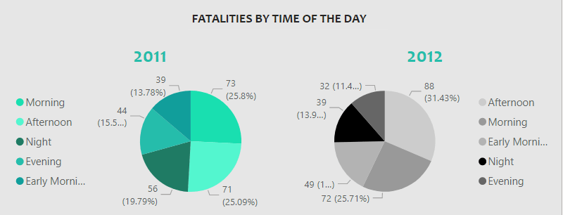
Figure 7 Fatalities by Time of Day
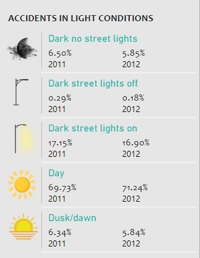
Figure 8 Accidents by Lightening Conditions
3.6 Figure 9 shows a Tree Map representation of Accidents occurred in various regions. At high level I have divided the regions in to Metropolitan and Regional. Accident occurrence in Metropolitan is quite higher than Regional and it got increased in 2012.
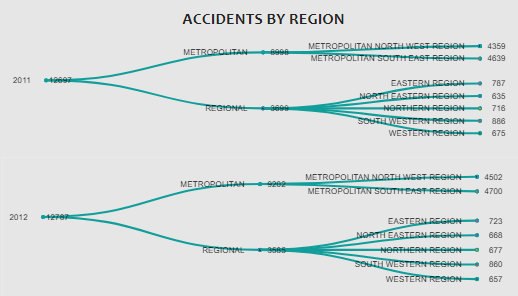
Figure 9 Accidents by Regions
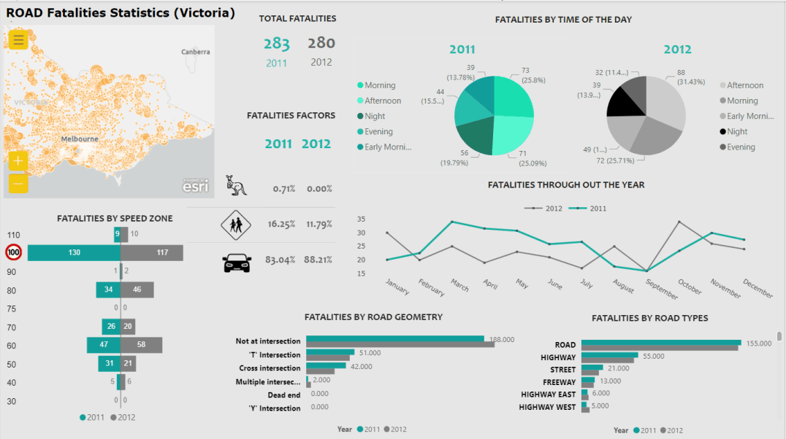
3.8 Road Fatalities Statistics Dashboard
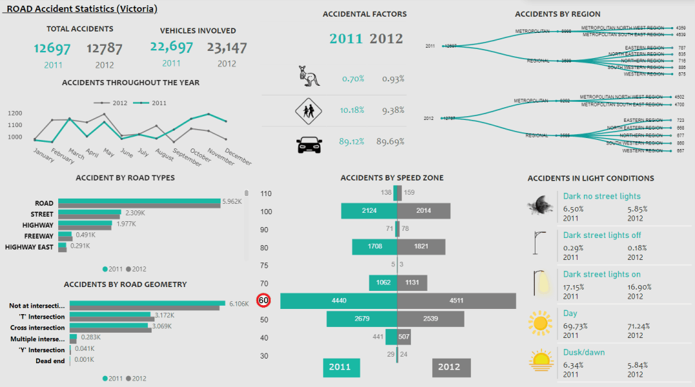
3.7 Road Accidents Statistics Dashboard
4. Inference
Based on our Data Analysis we visualize the scenarios and identified the patterns and behaviors of road accidents in 2011 and 2012. Generally, the results showed an alarming accidents trend and pattern.
This study has identified:
1. More number of accidents occurs during the day compared to night. And fatalities rate is also high during this time. The most frequent time of the accident occurrence can be categorized into two interval groups of time range; with the most frequent occurs between 6am to 12pm, followed by 12pm to 5pm.
2. The most critical type of road accidents and fatalities occur on straight roads and not at intersections. And vehicle collision is the most common accidental factor followed by pedestrians involved in the accidents.
3. Speed limit 60 accounts for most accidents, however most fatalities occur at 100 speed limit
5. Policies to reduce Road Accident and Fatality Rates
Looking at the inferences above, below policies can be implemented of both preventative and corrective nature.
Preventive policies
• Improve governance by increasing the number of speed cameras and mobile road cameras.
• Better road infrastructure elements could be used example sign boards at turns, frequent re-painting of road crossings.
• In Metropolitan areas having more road side shops, footpath should be guarded by rails. Whereas in Regional areas there could be better road markings and road reflectors to prevent road accidents.
• Blind spots data should be made available in GPS devices.
• Vehicle safety features should include blind spot detection mechanisms.
Corrective policies
• Increase Ambulance coverage and Police coverage in the accident prone zone.
• Usage of safer vehicles having good ANCAP ratings should be enforced.
Built with Mobirise
Free Offline Site Builder